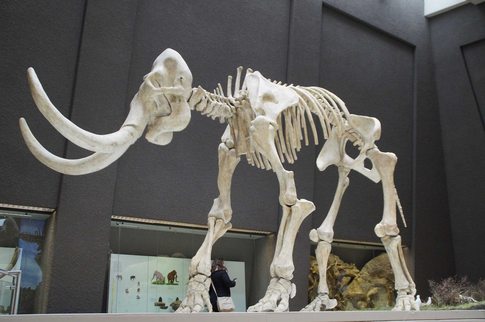
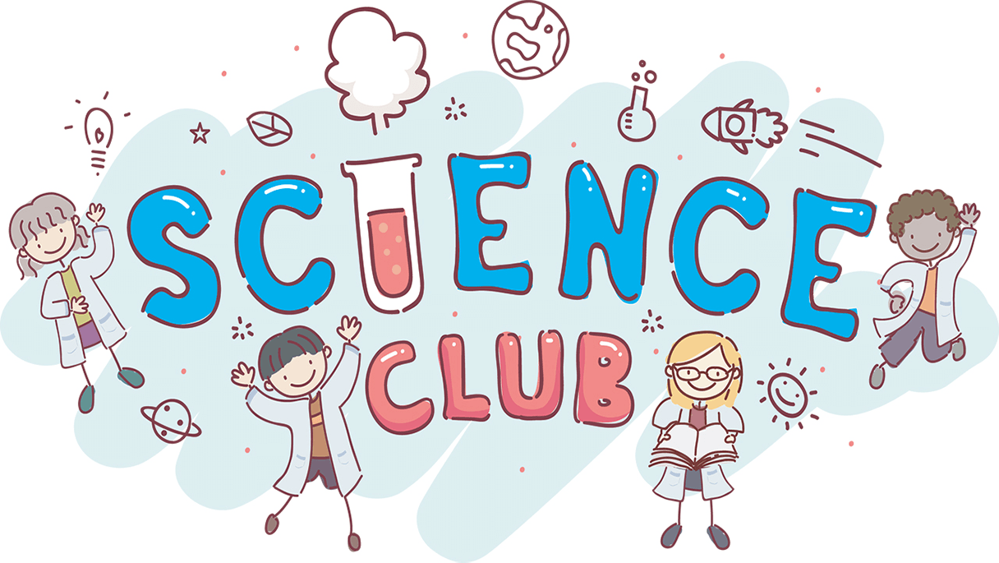
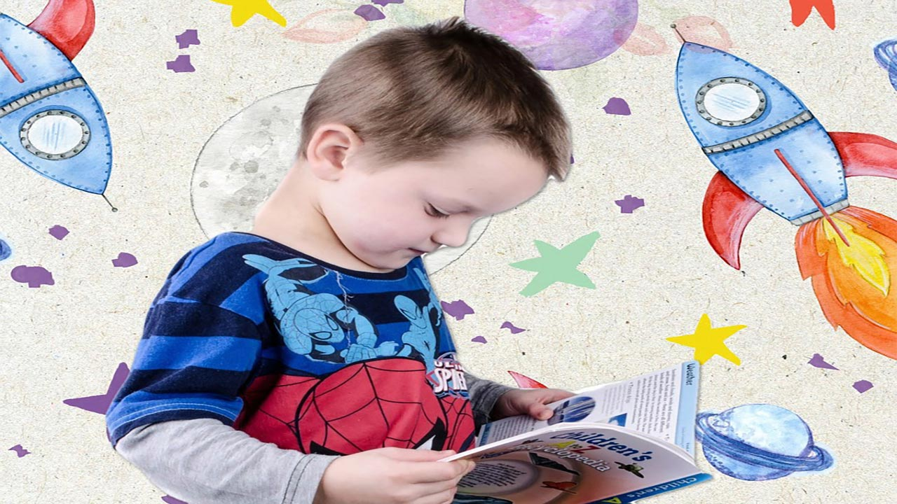
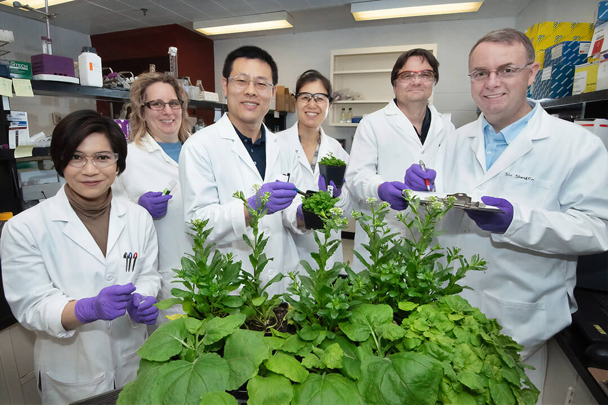

Explore!
- For Teachers - Our Cool Clubs! - For Researchers
NB! As a community-driven museum, we want to work with schools to create places of learning and exploring!
Teachers
Our exhibits are designed to be accessible for interested minds, so make sure you come ready to learn and explore. You can learn about Newtonian physics from our bumper swing, or why not travel back in time and meet our resident Woolly Mammoth?  As a community-driven museum, we want to work with schools to create places of learning and exploring. Our team are on hand to give your students guided tours of the museum, teach them in our learning laboratory, and provide great video presentations that will excite and inspire them. Please get in touch with us here to find out more about our facilities and to arrange a time to bring your students through for a visit.
Our Clubs
Are you a young person looking to learn more about science? Come on down to our museum, there’s plenty to see and do!
Young Stars Club
We also have the young stars club which meets once a week on a Saturday between 10:00 and 13:00 where you’ll get to explore and experiment with our team of experts.
Holiday Club
During the school holidays we run special holiday clubs where you can join other children your age to go on a journey of discovery. Each holiday we pick a new theme to explore. To find out more about the holiday club and how you can join, send us a message.
Researchers
Are you looking to get involved with our team of researchers and academics? Our museum offers various ways for you to use our resources and contribute towards them. We have online records, laboratory space, and a working relationship with a number of universities around the country.
Online Library
Our digital library is an online database of digital collected objects that includes text, still images, audio, video, digital documents, or other digital media formats. Objects consist of digitized content like print or photographs, as well as originally produced digital content like word processor files or social media posts. In addition to storing content, our digital library provide means for organizing, searching, and retrieving the content contained in the collection. To get access contact us here!
